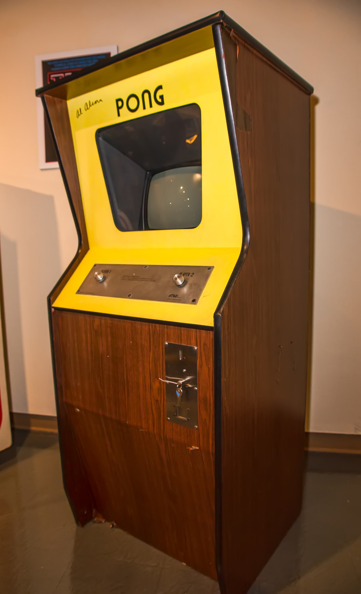
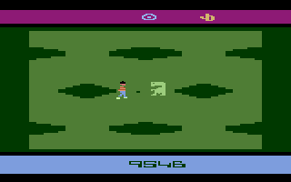
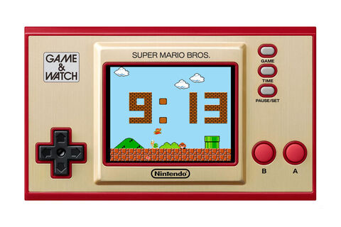
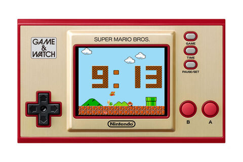
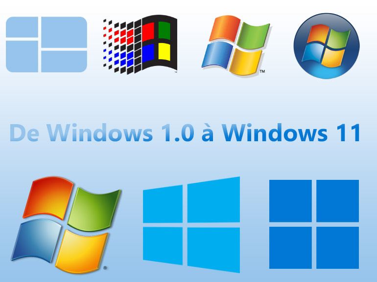
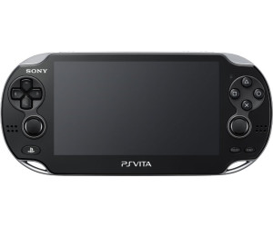
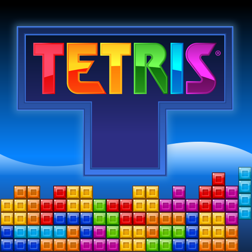
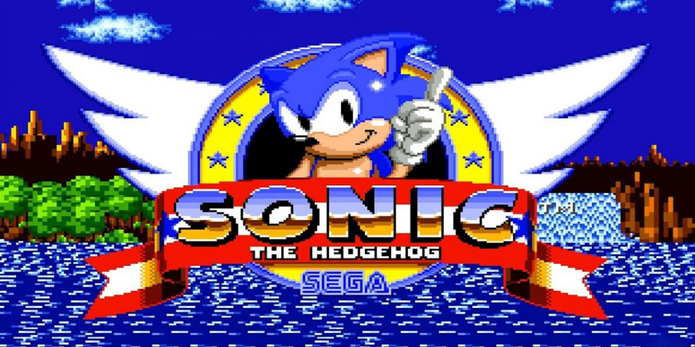

Touts les mastondontes que nous connaissons ou que nous avions conu on tous démarrer en petite entreprise et certaines étaient à la base spécialisé dans autre-chose que les consoles, d'autre sont été des titans dans le passé mais sont aujourd'hui plus rien. Voici Une présentation de différentes entreprises des consoles qui ont marquer les differentes génération de gameurs.
Commencons avec le doyen de la liste et né en 1972, Atari à été la première entreprise à avoir créer les consoles de salon et le premier jeux ayant eux du succès et "Pong" qui est pour le coup un parfait plagias du premier jeu au monde "tennis".

Atari s'imposera comme le roi pendant 10 ans mais finira par mourrir petit-à-petit à cause d'une certaine d'habitutde à prendre les choses à la légère et un manque d'évolution des graphismes. Le coup de grasse saura donné par 2 deux jeux en particuliers qui les forceront à se déclarer en faillites, et les voici:
Ce jeu est connu pour avoir subis une énorme polémique a cause de son but, aucune illustration ne sera montrer pour éviter de choqués des gens, même si c'est une boullie de pixels.
Ce jeu est considerer comme le plus mauvais jamais créé, tellement mauvais que par honte, Atari décidera d'enterrer des centaines d'exemplaires dans une décharge americaine.
Après de tels flops, Atari finira Par s'écroulé pour au final être r'acheter en 2003 par l'entreprise Française Infogrames.
Nintendo est un entreprise qui bien plus vieille que vous le croyer, c'était à ces débuts des vendeurs et fabriquants de jeux de carte.
Cela a l'air farfelue dit comme ça, pourtant ils ont continuer dans cette ligné pendant 70 ans avant de faire sa transition en 1970. C'est de cette tournurent qu'ils connaitrons leurs succès avec Pac-man et les Game-and-Watch, Sachant qu'ils fesaient aussi dansles jouet à l'époque.
 

Les game-and-watch ont la particularité de posséder qu'un seul jeu par console, ce qui inpactait beaucoup le processus de vente, les premières années de ventes se présentait bien du fait de leurs variétés de jeux, c'est à la même époque que certains personnages bien connus de la cultures apparaiteront tel que Pac-man qu'on a citer avant, Mr game-and-watch le premier personnage nintendo, Donkey Kong et enfin Mario, que l'on voit pour la première fois dans "Donkey Kong", il est même possible de jouer à donkey Kong sur le moteur de recherche google, comme avec Pac-man, si vous voulez essayer ce fantastique jeu retro Cliquer ici.Mais quelque mois plus-tard les stocks de Game-and-watch arrêteront de se vendre, car la game-and-watch devenais trop chère pour un jeu. C'est à ce moment que nintendo fabriquerons leur première console de salon, La NESS avec de nouvelles licenses qui exploseront
Et bien evidemment, le légendaire Super Mario Bros qui deviendra la mascotte du Studio
Cela-dis ,tout n'est pas rose non plus et beaucoup de tentative on raté, comme leur fameux casque VR ou plus récemment La Wii U.


Fondé en 1975 par Bill Gate, agé de 20 ans et Paul Allen. Microsoft aura révolutionné le monde de l'informatique et le fait toujours aujourd'hui pour être la première entreprise de Multinational Informatique. Le principe de base de microsoft était seulement de developper l'interpréteur basic de l'altaïr 8080. En 1985, ils marquront à jamais Internet en créent le légendaire Window, avec ces music et logo toujours plus iconic.
Ce sera en 2001 que microsoft aura l'idée de crée leur propre console nommée la Xbox, une console connue pour avoir bien plus de puissance que son collègue de chez nintendo qui eux vendait l'aspect famillial. Malgré le fait que leurs console soit arriver en retard dans la cource, ils ont quand même reussi à s'imposer face à leur rivaux actuel PlayStation, notamment grâce à leurs exclus qui sont cité dans leur onglet spécifique.

Ce sera grâce au succes de la console que Bill Gate sera pendant un moment, l'homme le plus riche du monde. Aujourd'hui, Microsoft aura au totale 4 géneration de Xbox avec leurs alternatifs.

Crée en 1946, L'histoire de Sony est un peu un mélange de nintendo et microsoft avec quand-même quelques exceptions importants, La principale est que Sony est à la base une entreprise sur l'éléctro-ménager tel que des aspirateurs, des frigo et j'en passe, aujourd'hui c'est aussi une multinationale. L'autre est que malgré le fait que l'entreprise soit Japonnaise comme nintendo, ils essayerons d'attirer le regard des occidentaux sur leurs consoles, essayant de jouer dans une cours qui n'est pas la leurs, et ce pari risqué fonctionne très bien, sachant que leur première console "La PlayStation" est sorti en 1994, soit 6 ans avant la Xbox. En gros, ils ont démarrer comme nintendo et la Playstation est à peu prêt similaire à la Xbox au vu de son objectif "être performante et puissante".
Ceux qui a fait sa reussit est bien entendus, sa puissance, mais aussi sa manette qui pour le coup était vraiment aggréable à prendre en mains, contraiment à celle de la nintendo64.


Après, comme toute les entreprises, sony a connue des flops pour avoir des nouveautes qui ont bien raté, je pense notamment à la PS vita, aussi récente que la Wii U
Ayant vu le jour en 1940, Sega est une entreprise qui a une époque était leader du marché du gaming à la même époque qu'Atari, à la difference que eux, avait des jeux qui sortait vraiement du lot positivement, parce que oui être à l'origine du pire jeu de la planète, y'a quand plus glorieux. C'est notament qui sont à l'origine du Jeu le plus vendus de l'histoire "Tetris" avec quand même plus de 500 Millions d'exemplaire.
Ce qui est surprenant, c'est qu'à la base, Sega était censé être un service de maintenance de Jukes-boxes qui devait servir à l'armée Americaine pendant la guerre en corée. Ils fusionnent avec "Service game" pour devenir "Service game Japan pour crée des jeux de divertissement. Elle se spécialisera dans le jeux vidéo en 1972, date à lequelle naîtra leur premier jeu Pong tron et sera au plus grâce à leur jeu phare Sonic the Hedgehog Mais chuterons très vite à cause de leur console ,La DreamCast qui avait deux problème, le premier est qu'il à une très mauvaise manètte à prendre en mains et surtout, la console était trop en retard dans son temps. Suite à un enchaînement de mauvaises décisions, SEGA sera forcer pour pouvoir survivre de se faire racheter par nintendo en 2004, dommage pour une entreprise qui avait de si beaux jour devant lui.

Nous ne parlerons pas de Valve dans cette onglet parce que l'entreprise est encore trop récente pour parler de ces origines, mais mention a leur moteur de jeu Steam qui est l'un des services les plus utiliser dans le monde après Epic Game.